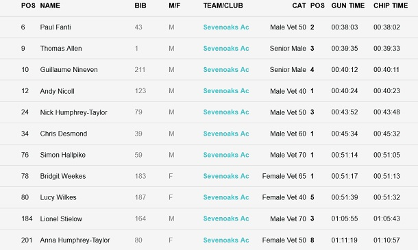

Eleven SAC runners contested the 2023 Weald 10k on 3rd September, with our men's team taking the prize for second place. There were some excellent placings and age category results, led by Paul Fanti, and including category wins for Bridgit Weekes, Andy Nicoll, Chris Desmond and Simon Hallpike, as shown below:

The full results are here.